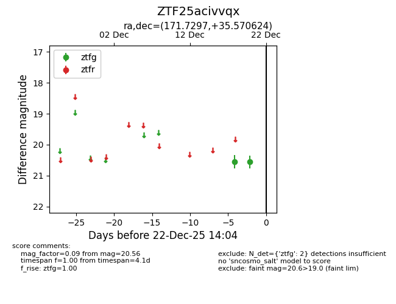
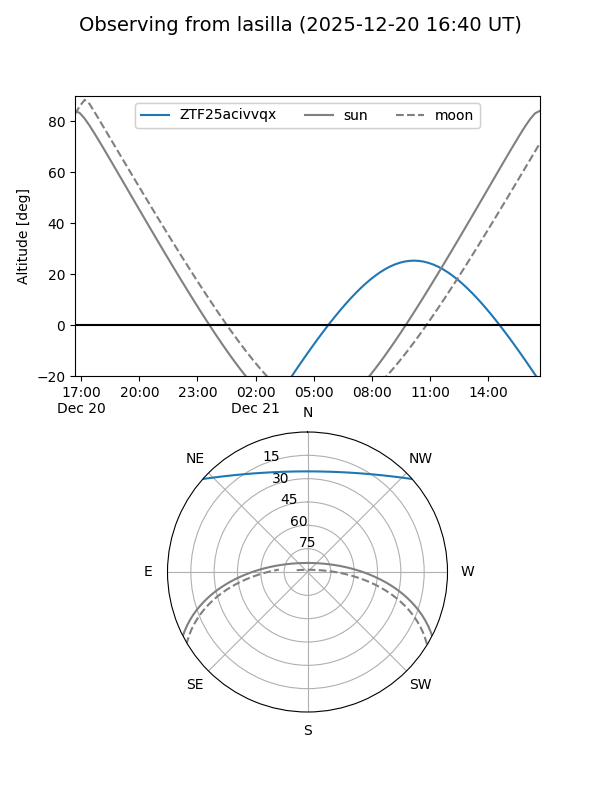
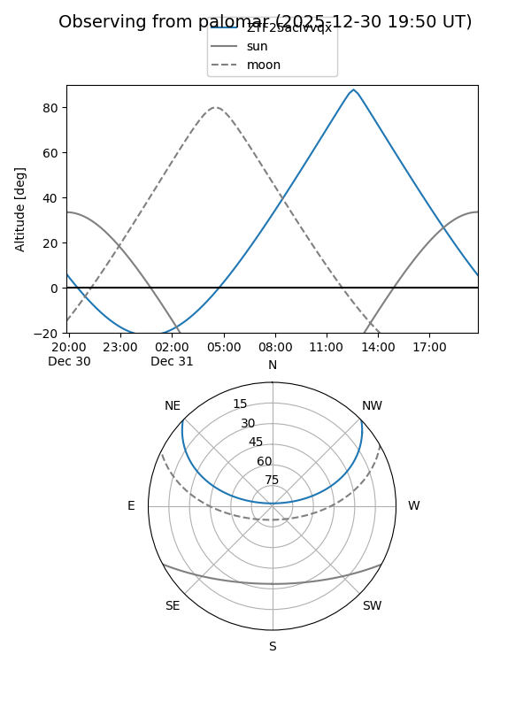

ZTF25acivvqx
Target ZTF25acivvqx at 2025-12-20 14:04
Aliases and brokers:
FINK: fink-portal.org/ZTF25acivvqx
Lasair: lasair-ztf.lsst.ac.uk/objects/ZTF25acivvqx
ALeRCE: alerce.online/object/ZTF25acivvqx
alt names
ZTF25acivvqx (ztf,fink_ztf)
Coordinates:
equatorial (ra, dec) = 171.7297,+35.57062
equatorial (HMS+DMS) = 11:26:55.12,+35:34:14.25
galactic (l, b) = (182.5722,+70.13442)
Flags:
Photometry:
last ztfg=20.56
2 ztfg detections
Lightcurve

Visibility


Additional plots